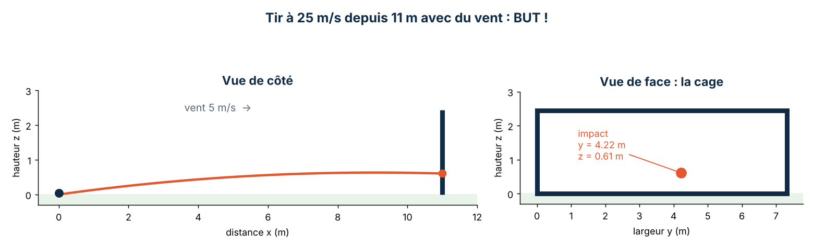

Simulateur de tirs au butPenalty shoot-out simulator
Un programme en C++ qui calcule la trajectoire d'un ballon soumis au vent et prédit si le tir est marqué, arrêté par le gardien ou raté.
A C++ program that calculates the path of a ball pushed by the wind and predicts whether the shot is scored, saved by the goalkeeper or missed.

L'idéeThe idea
L'objectif était de créer un simulateur physique en C++. J'ai choisi le tir au but : l'utilisateur entre les paramètres d'un tir (vitesse et angles du ballon, position de départ, vent, taille du gardien) et le programme calcule la trajectoire pour savoir si le ballon entre dans la cage.
The goal was to build a physics simulator in C++. I chose the penalty kick: the user enters the parameters of a shot (ball speed and angles, starting position, wind, goalkeeper height) and the program calculates the path to find out whether the ball goes into the goal.
Le programme propose deux modes :
The program offers two modes:
- Tir unique : il affiche la force du vent, les composantes de la vitesse, le point d'impact, indique si le but est marqué, puis estime les chances que le gardien arrête le ballon.
- Séance de tirs au but : deux équipes tirent à tour de rôle, le programme tient le score, déclare la victoire dès que l'écart est suffisant et passe en mort subite en cas d'égalité.
- Single shot: it shows the wind force, the speed components and the impact point, says whether a goal is scored, then estimates the goalkeeper's chances of stopping the ball.
- Penalty shoot-out: two teams take turns, the program keeps the score, declares a winner as soon as the gap is large enough and goes to sudden death in case of a tie.
RéalisationHow I built it
1. Modéliser le problème1. Modelling the problem
Le ballon (0,43 kg) est soumis à son poids et à la force du vent. La vitesse de départ et la force du vent sont décomposées sur les trois axes (x vers le but, y sur la largeur, z en hauteur) à partir d'un angle d'élévation α et d'un angle de déviation φ. La force du vent dépend du carré de sa vitesse :
The ball (0.43 kg) is subject to its weight and to the wind force. The initial speed and the wind force are split along the three axes (x towards the goal, y across, z upwards) using an elevation angle α and a side angle φ. The wind force depends on the square of its speed:
Fventwind = K · vventwind²
Les forces étant constantes, chaque position suit une équation du second degré en fonction du temps, par exemple sur la hauteur :
Since the forces are constant, each position follows a second-degree equation over time, for example for the height:
z(t) = ½ (Fz/m − g) t² + vz t + z0
2. Trouver le point d'impact2. Finding the impact point
Pour savoir quand le ballon atteint la ligne de but, le programme résout l'équation du second degré sur l'axe x (calcul du discriminant) et garde la solution positive. Il en déduit la position du ballon (y, z) à cet instant, puis vérifie s'il est dans la cage de 7,32 × 2,44 m.
To find when the ball reaches the goal line, the program solves the second-degree equation on the x axis (using the discriminant) and keeps the positive solution. It then works out the ball's position (y, z) at that moment and checks whether it is inside the 7.32 × 2.44 m goal.
3. Ajouter le gardien3. Adding the goalkeeper
Le gardien part du centre de la cage. Sa portée est estimée à partir de sa taille, de la longueur moyenne d'un bras (0,7 m) et de sa détente (1 m). Le programme compare cette portée à la distance entre le centre de la cage et le point d'impact, et selon le côté où il plonge, annonce une chance d'arrêt de 0 %, 50 % ou 90 %. Il simule aussi le cas d'un gardien qui part toujours du bon côté.
The goalkeeper starts in the centre of the goal. Their reach is estimated from their height, the average arm length (0.7 m) and their jump (1 m). The program compares this reach with the distance between the centre of the goal and the impact point and, depending on which side they dive, gives a 0 %, 50 % or 90 % chance of a save. It also simulates a goalkeeper who always dives the right way.
4. Organiser le code4. Structuring the code
Le code est découpé en un programme principal et une bibliothèque (fichiers .h et .cpp) qui regroupe les fonctions : conversion d'unités (km/h → m/s, degrés → radians), force du vent, vitesse initiale, trajectoire et séance de tirs au but. Chaque calcul peut ainsi être testé et réutilisé séparément.
The code is split into a main program and a library (.h and .cpp files) holding the functions: unit conversion (km/h → m/s, degrees → radians), wind force, initial speed, trajectory and shoot-out. Each calculation can therefore be tested and reused on its own.
RésultatResult
Exemple de simulation : un tir à 25 m/s depuis le point de penalty (11 m), avec un vent de 5 m/s. Le ballon arrive à 0,61 m du sol, hors de portée du gardien : le but est marqué.
Sample run: a 25 m/s shot from the penalty spot (11 m), with a 5 m/s wind. The ball reaches the goal 0.61 m above the ground, out of the goalkeeper's reach: goal scored.
Sortie réelle du programme dans la console (mode tir unique)Actual program output in the console (single-shot mode, in French)
Pistes d'améliorationNext improvements
- prendre en compte la résistance de l'air sur le ballon et l'effet donné au tir ;
- afficher la trajectoire sous forme de graphique plutôt qu'en texte.
- take into account air resistance on the ball and the spin given to the shot;
- display the trajectory as a graph instead of text.